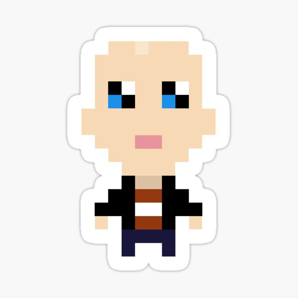

Alexander RadioWP*
Junior Frontend Developer
*This CV was created for training purposes. Part of personal information was hidden for privasy reasons and can be provided upon request.
Contacts
- Location: Minsk, Belarus
- GitHub: RadioWP
- Discord: RadioWP#8132
- Email: *******@gmail.com
- Phone: +375 29 *** ** **
Summary
Junior frontend developer at the Stage 0 of RS School. Started studying at RS School to systematize and improve the level of frontend development skills for further career and personal projects.
Skills
- Basic knowledge of Frontend Development (Markdown, HTML, CSS, JavaScript, Git, VSCode);
- Advanced knowledge of WordPress CMS.
Code
function multiply(a, b){
return a * b
}
Experience
Current position: Head of analytical department in a state-owned enterprise. Extensive practical experience in gathering fragmented information from external sources and making research-based content. Experience in managing a small team, including remote work. Additional information can be provided upon request.
RS School JS/FE 2022Q1 projects:
Education
Bachelor's Degree in Economics;
Offline trainings: Project Management;
Online trainings: Frontend Development (RS School, CS50, MDN, w3schools, freecodecamp, code-basics, etc).
Languages
- Russian: native;
- English: B1.